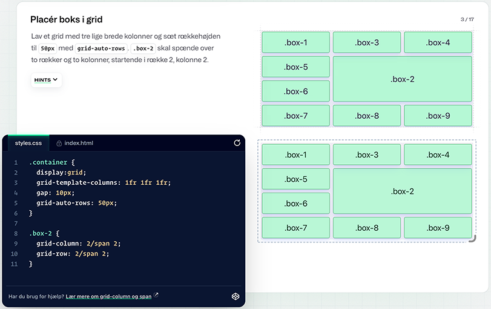

tema 2
grundlæggende web
formålet med tema 2 var at give os en grundlæggende introduktion til de værktøjer og programmer vi kommer til at bruge mest som multimediedesignere, så vi på den måde fik skabt et godt fundament for vores videre arbejde igennem studiet. for at gøre dette skulle vi introduceres til de grundlæggende faglige begreber der knytter sig til digitale brugergrænseflader, digital indholdsproduktion, digital kommunikation og responsivt design. som de første byggesten på vores uddannelse, skulle vi lære at sætte hjemmesider op i html og css, samt arbejde med grafik og billeder i figma.

proces
i undervisningen blev jeg introduceret til html, og vi begyndte hurtigt at arbejde med at sætte indhold ind i html, hvilket bidrog til en visuel forståelse af sammenhængen mellem det jeg ser i html og det jeg ser på en hjemmeside. efterfølgende blev jeg introduceret til css, og hvordan dette bruges til at style html. i denne forbindelse læste jeg også del 3 og 4 i interfacedesign, skrevet af morten rold, som gav en god og grundig forklaring på de designprincipper jeg ville kommer til at skulle bruge igennem mit studie - eksemplevis gestaltlovene og visuelt hierarki.
som et led i tema 2 skulle jeg lave en studiestartsprøve, og jeg begyndte så småt at arbejde på mobilversionen af denne. i forbindelse med det snakkede vi om de designprincipper vi have læst om, og lærte mere om typografi og dets betydning. herefter blev jeg introduceret til grids, som en måde at lave layouts på. denne metode skulle jeg bruge til anden del af studiestartsprøve, hvor mobilsitet skulle laves responsivt vha. udleverede wireframes. vi lavede en del øvelser med grids i undervisningen, blandt andet inde på ecercssises, hvilket gjorde at jeg fik en begyndende forståelse for den måde man tænker på når man koder layouts. i undervisningen blev jeg også introduceret til flexbox, billedebehandling samt css og html validering.


løsning
jeg skulle nu implementere det jeg havde lært i undervisningen, for at opfylde layoutkravet til studiestartsprøve. eftersom wireframes og indhold var givet på forhånd, fokuserede løsning kun på layout og styling. det endte ud i en side om computere med et layout der stemte overens med wireframes, og med en styling der primært fokuserede på brugen af blå som primærfarve og lilla som kontrastfarve til den blå. alle siderne validerede jeg, som vi havde fået vist det i undervisningen.

læring og reflektioner
tema 2 lagde grundstenene for resten af mit semester, og den måde vi lærte at tænke på ift. layouts og design er noget jeg har taget med mig videre og øvet mig på i de efterfølgende temaer. jeg havde aldrig kodet før jeg startede på multimediedesign, og da jeg var færdig med tema 2, havde jeg fået en virkelig god forståelse for de mest basale værktøjer og programmer jeg bruger som multimediedesigner, og de faglige begreber der knytter sig til det arbejde man laver som multimediedesigner. jeg sætter især stor pris på at vi læste del 3 og 4 i interfacedesign bogen så relativt tidligt som vi gjorde, da det gjorde et stort indtryk på mig og kombinationen af læsning og undervisning i det læste stof gjorde at designprincipperne lagrede sig bedre i min hukommelse. meget af det vi lærte på tema 2 bruger jeg stadig her til sidst på semesteret, så det arbejde vi lavede føltes meningsfuldt dengang og føles stadig meningsfuldt i dag.
pil